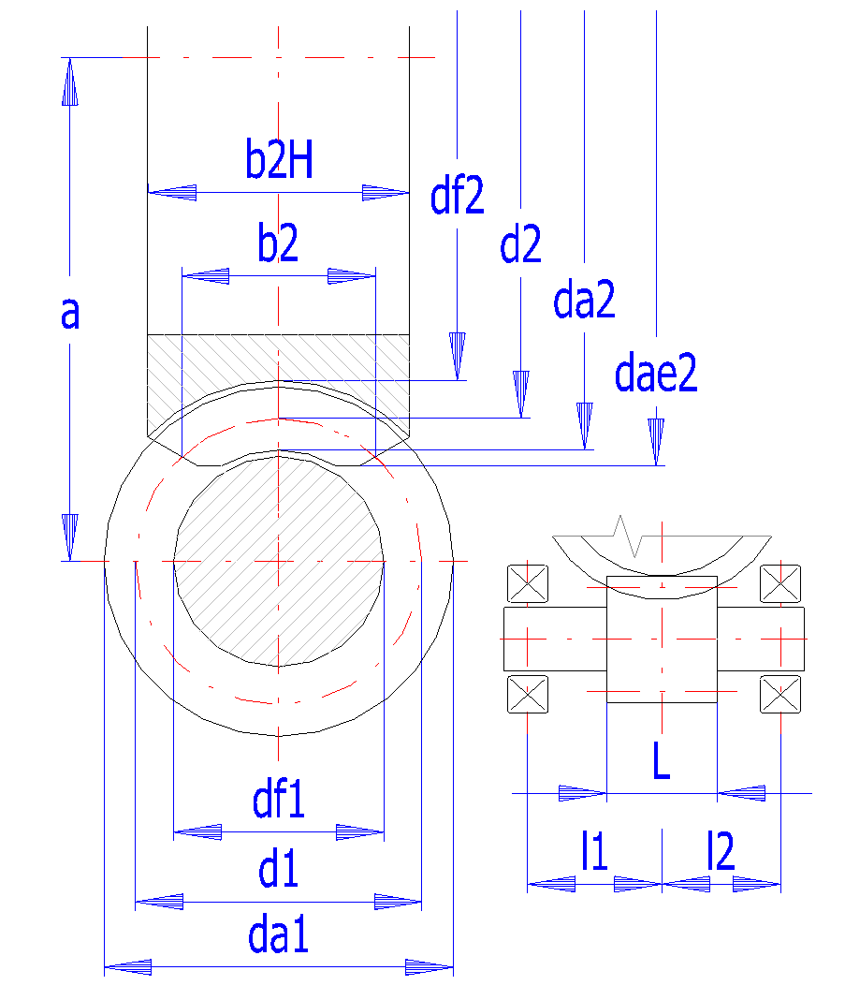
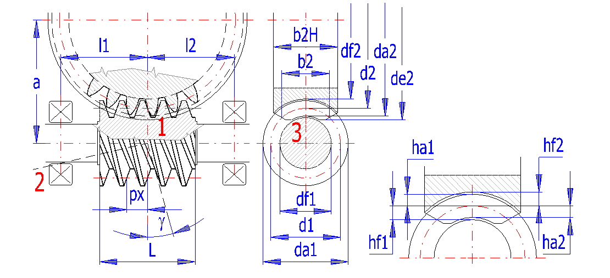

📥 Phần Đầu Vào (Input Section)
Mục 1.0 đến Mục 4.0 (Thông Số Truyền Động, Vật Liệu, Bôi Trơn, Biên Dạng & Thiết Kế Hình Học)
1.0 Nhập Các Thông Số Truyền Động Cơ Bản (Options of basic input parameters)
▶| # | Thông Số Tính Toán | Ký Hiệu | Trục Vít (Worm 1) | Bánh Vít (Worm Gear 2) | Đơn Vị | Công Cụ Tiện Ích |
|---|---|---|---|---|---|---|
| 1.1 | Hệ đơn vị tính toán (Calculation units) | Units | SI | - | ||
| 1.2 | Chi tiết dẫn động chủ động (Driven worm / worm gear) | Drive | - | - | ||
| 1.3 | Công suất truyền động (Transferred power Pw1 / Pw2) | Pw | 3.9472 | kW | Nhập Pw2 (Bánh vít) | |
| 1.4 | Tốc độ quay (Speed Worm n1 / Worm gear n2) | n | 37.50 | vòng/phút | ||
| 1.5 | Mô-men xoắn trên trục (Torsional moment Mk1 / Mk2) | Mk | 25.1285 | 763.9437 | N.m | |
| 1.6 | Tỉ số truyền yêu cầu / chọn từ bảng chuẩn (Transmission ratio) | i_in |
|
5.0 ÷ 200.0 | - | - |
| 1.7 | Tỉ số truyền thực tế / Sai lệch (Actual transmission ratio / deviation) | i | 40.0000 | 0.00% | - | - |
3.0 Thông Số Biên Dạng Răng Cơ Bản (Parameters of the tooth profile)
▶| # | Thông Số Biên Dạng Răng | Ký Hiệu | Trục Vít (Worm 1) | Bánh Vít (Worm Gear 2) | Đơn Vị | Tùy Chọn |
|---|---|---|---|---|---|---|
| 3.1 | Hệ số chiều cao đầu răng (Addendum coefficient ha*) | ha* | 1.0000 | [modul] | Chuẩn DIN = 1.0 | |
| 3.2 | Hệ số khe hở hướng tâm (Unit head clearance c*) | c* | 0.2500 | [modul] | Chuẩn DIN = 0.25 | |
| 3.3 | Hệ số bán kính lượn chân răng khuyến nghị (Recommended root radius) | rf* rec | 0.3800 | c* / (1 - sin α0) | [modul] | |
| 3.4 | Hệ số bán kính lượn chân răng thiết kế (Coefficient of root radius) | rf* | 0.3800 | [modul] | - |
4.0 Thiết Kế Hình Học Bộ Truyền Trục Vít - Bánh Vít (Design of a geometry of toothing)
▼| # | Thông Số Hình Học Thiết Kế | Ký Hiệu | Trục Vít (Worm 1) | Bánh Vít / Giới Hạn | Đơn Vị | Chế Độ Tính / Tiện Ích |
|---|---|---|---|---|---|---|
| 4.0 | Kiểu biên dạng ren trục vít (Type of worm profile - DIN 3975) | Type | DIN 3975 | ZA: mx | ZN..ZH: mn | ||
| 4.9 | Số mối ren trục vít / Số răng bánh vít (Number of teeth Worm / Gear) | z1, z2 | 40 | răng | ||
| 4.10 | Góc ăn khớp danh nghĩa (Pressure angle: ZA=αx, ZN/ZI/ZK/ZH=αn) | α |
|
Góc dọc trục αx (Hệ ZA) | độ (°) | - |
| 4.11 | Hệ số đường kính trục vít (Diameter quotient q = d1 / mx) | q |
|
6.0 ÷ 25.0 (Khuyên: 6.80) | - | |
| 4.12 | Đường kính vòng chia trục vít (Mean / reference diameter of worm) | d1 | ~ 28.79 mm | mm | ||
| 4.13 | Góc nâng đường xoắn vít (Pitch / lead angle γ) | γ |
|
2° ÷ 40° (Tự hãm ≤ 6.98°) | độ (°) |
|
| 4.14 | Hướng xoắn ren trục vít (Pitch direction) | Hand | - | - | ||
| 4.15 | Mô đun thiết kế / Giá trị tiêu chuẩn (Module: ZA=mx, ZN..ZH=mn) | mx |
|
mn = 4.2045 mm | mm | - |
| 4.16 | Bước răng vòng (in) / Mô đun Anh (Circular Pitch CP / Diametral Pitch DP) | CP / DP | 0.5236 | 6.0000 | in / [1/in] | - |
| 4.17 | Khoảng cách ổ đỡ trái / phải theo % da2 (Distance of left/right bearing %) | l1%, l2% | [% da2] | - | ||
| 4.18 | Khoảng cách từ tâm đến ổ đỡ trái / phải (Distance of left/right bearing) | l1, l2 | mm | |||
| 4.19 | Chiều dài phần cắt ren trục vít (Worm face width L) | L | Khuyên dùng: 56.73 | mm | ||
| 4.20 | Chiều rộng vành răng bánh vít (Wormgear face width b2H) | b2H | Khuyên dùng: 33.57 | mm | ||
| 4.21 | Góc vát mép vành bánh vít (Wheel rim chamfer angle θ2) | θ2 | b4=10.0, Δb=6.8 mm | độ (°) |
|
|
| 4.22 | Kích thước vai trục vít: Đường kính / Chiều rộng (Shaft shoulder ds, t) | ds, t | mm | |||
| 4.23 | Góc vát mép đầu ren trục vít (Angle of worm shrink β) | β | 5° ÷ 25° (chuẩn 10°) | độ (°) | - | |
| 4.24 | Hệ số dịch chỉnh biên dạng bánh vít (Addendum modification x2) | x2 | > -1.000 (z2min = 22.2) | [modul] | ||
| 4.25 | Đường kính vòng chia Trục vít / Bánh vít (Reference diameter d1, d2) | d1, d2 | 36.2315 | 170.5012 | mm | - |
| 4.26 | Khoảng cách trục mục tiêu / hiện tại (Required centre distance / current) | a_req / a | 103.3663 | mm | - | |
| 4.27 | Khớp chính xác khoảng cách trục a_req bằng cách thay đổi thông số | Fit a | - | |||
| 4.28 | Khối lượng gần đúng: Toàn hộp giảm tốc / Bộ truyền (Approximate weight) | m | 21.3026 | 9.0762 | kg | - |
| 4.29 | Hiệu suất tổng thực tế / Hiệu suất lý thuyết cực đại (Total / Max efficiency) | η_ges, η_max | 76.0036 | 88.2685 | % | - |
Sơ Đồ Bố Trí Ổ Đỡ & Chiều Xoắn (MITCalc Fig. 4.0)

📈 Đồ Thị Tọa Độ Tỷ Lệ Thực 2D Động (MITCalc Chart 1963 - Sheet Data1)
Tự động co giãn 1:1 theo da2, da1, a, l1, l2, L, b2H
📊 Phần Kết Quả Tính Toán (Results Section)
Mục 5.0 (Kích Thước DIN 3975), Mục 6.0 (Hiệu Suất & Tổn Thất DIN 3996) & Mục 12.0 (Kích Thước AGMA 6022-C93)
5.0 Kích Thước Hình Học Cơ Bản Bộ Truyền (Basic dimensions of gearing - DIN 3975)
▼Bản Vẽ Định Nghĩa Kích Thước Chuẩn DIN 3975 (MITCalc Original Vector Drawing)

| # | Thông Số Kích Thước (DIN 3975) | Ký Hiệu | Trục Vít / Pháp Tuyến | Bánh Vít / Ngang / Dọc | Đơn Vị | Trạng Thái / Phụ Trợ |
|---|---|---|---|---|---|---|
| 5.1 | Mô đun: Pháp tuyến / Mặt đầu (ngang) / Dọc trục (Module mn, mt, mx) | mn, mt, mx | 4.2333 | 36.2315 | mm | mx = 4.2625 |
| 5.2 | Bước răng: Pháp tuyến / Mặt đầu / Dọc trục (Pitch pn, pt, px) | pn, pt, px | 13.2994 | 113.8246 | mm | px = 13.3911 |
| 5.3 | Góc ăn khớp: Pháp tuyến / Mặt đầu / Dọc trục (Pressure angle αn, αt, αx) | αn, αt, αx | 20.0000 | 72.2024 | độ (°) | αx = 20.1269 |
| 5.4 | Số mối ren trục vít / Số răng bánh vít (Number of teeth z1, z2) | z1, z2 | 1 | 40 | răng | OK |
| 5.5 | Đường kính vòng đỉnh (Tip / throat diameter da1, da2) | da1, da2 | 44.6982 | 178.9678 | mm | OK |
| 5.6 | Đường kính vòng chia (Reference diameter d1, d2) | d1, d2 | 36.2315 | 170.5012 | mm | OK |
| 5.7 | Đường kính vòng đáy (Root diameter df1, df2) | df1, df2 | 25.6482 | 159.9178 | mm | OK |
| 5.8 | Đường kính vòng lăn (Pitch cylinder diameter dw1, dw2) | dw1, dw2 | 36.2315 | 170.5012 | mm | OK |
| 5.9 | Đường kính trung bình (Mean diameter dm1, dm2) | dm1, dm2 | 36.2315 | 170.5012 | mm | OK |
| 5.10 | Đường kính ngoài lớn nhất bánh vít (Outside diameter of wormgear de2) | de2 | 174.2-187.3 | mm | ||
| 5.11 | Chiều cao đầu răng (Addendum ha1, ha2) | ha1, ha2 | 4.2333 | 4.2333 | mm | - |
| 5.12 | Chiều cao chân răng (Dedendum hf1, hf2) | hf1, hf2 | 5.2917 | 5.2917 | mm | - |
| 5.13 | Khoảng cách trục thực tế (Center distance a) | a | 103.3663 | - | mm | OK |
| 5.14 | Chiều dài phần ren trục vít / Bề rộng bánh vít (Face widths L, b2H) | L / b2H | 56.7267 | 33.5700 | mm | - |
| 5.15 | Góc nâng vít trên: Vòng trung bình / Vòng lăn (Pitch angle γ, γw) | γ, γw | 6.7098 | 6.7098 | độ (°) | γb = 21.0518° |
| 5.16 | Chiều dày răng trong mặt phẳng pháp tuyến (Normal tooth thickness sn1, sn2) | sn1, sn2 | 6.6497 | 6.6497 | mm | - |
| 5.17 | Chiều dày răng trong mặt phẳng dọc trục (Axial tooth thickness sx1, sx2) | sx1, sx2 | 6.6956 | 6.6956 | mm | - |
| 5.18 | Chiều rộng rãnh răng trong mặt phẳng pháp tuyến (Normal space width en1, en2) | en1, en2 | 6.6497 | 6.6497 | mm | - |
| 5.19 | Chiều rộng rãnh răng trong mặt phẳng dọc trục (Axial space width ex1, ex2) | ex1, ex2 | 6.6956 | 6.6956 | mm | - |
6.0 Hiệu Suất, Vận Tốc Trượt & Tổn Thất Công Suất (Efficiency and losses - DIN 3996)
▶| # | Chỉ Số Động Học, Ma Sát & Hiệu Suất (DIN 3996) | Ký Hiệu | Giá Trị Tính Toán | Thông Số Phụ / Lựa Chọn | Đơn Vị | Tham Chiếu DIN |
|---|---|---|---|---|---|---|
| 6.1 | Vận tốc trượt trên vòng trung bình (Sliding velocity vgm) | vgm | 2.8653 | v1 = 2.8456 | v2 = 0.3348 | m/s | DIN (9) |
| 6.2 | Hệ số kích thước (Size factor YS) | YS | 0.9836 | - | - | DIN (55) |
| 6.3 | Hệ số hình học (Geometry factor YG) | YG | 1.0240 | h* = 0.0668 | - | DIN (57) |
| 6.4 | Hệ số vật liệu (Material factor YW) | YW | 0.9500 | - | - | DIN (Tbl 5) |
| 6.5 | Hệ số độ nhám mặt ren trục vít (Roughness factor YR) | YR | 1.0000 | - | - | DIN (59) |
| 6.6 | Hệ số ma sát cơ bản (Basic coefficient of friction μ0T) | μ0T | 0.0245 | - | - | DIN (47-54) |
| 6.7 | Hệ số ma sát trung bình trong vùng ăn khớp (Mean friction coeff. μzm) | μzm | 0.0234 | - | - | DIN (46) |
| 6.8 | Góc ma sát tương đương (Friction angle ρz = arctan μzm) | ρz | 1.3428 | μ_static = 0.1225 | độ (°) | - |
| 6.9 | Hiệu suất riêng phần của cặp ăn khớp (Efficiency of gearing ηz) | ηz | 0.8316 | - | - | DIN (44) |
| 6.10 | Tổn thất công suất không tải / khuấy dầu (No-load losses PV0) | PV0 | 0.1580 | 157.96 W | kW | DIN (36) |
| 6.11 | Tổn thất công suất tại các ổ đỡ trục (Bearing losses PVLP) | PVLP | 0.1625 | kW | DIN (38, 39) | |
| 6.12 | Tổn thất công suất tại phớt chắn dầu (Sealing losses PVD) | PVD | 0.0464 | 46.39 W | kW | DIN (42) |
| 6.13 | Tổn thất công suất ăn khớp răng (Gearing losses PVz) | PVz | 0.5803 | 580.31 W | kW | DIN (61) |
| 6.14 | Tổng tổn thất công suất toàn hộp giảm tốc (Total power loss PV) | PV | 0.9472 | 947.18 W | kW | DIN (35) |
| 6.15 | Hiệu suất tổng cộng toàn bộ truyền (Total efficiency ηges) | ηges | 0.7600 | 76.0036% | - | DIN (33, 34) |
12.0 Kích Thước Bộ Truyền Trục Vít Theo Tiêu Chuẩn Mỹ (AGMA 6022-C93)
▶| # | Thông Số Kích Thước Theo AGMA 6022-C93 | Ký Hiệu | Trục Vít / Thông Số 1 | Bánh Vít / Thông Số 2 | Đơn Vị | Quy Đổi Hệ Mét |
|---|---|---|---|---|---|---|
| 12.1 | Số mối ren trục vít / Số răng bánh vít (Number of teeth NW, NG) | NW, NG | 1 | 40 | răng | AGMA (1) |
| 12.2 | Tỉ số truyền (Transmission ratio mG) | mG | 40.0000 | - | - | - |
| 12.3 | Khoảng cách trục / Bước răng dọc trục (Centre distance C, axial pitch px) | C, px | 4.0695 | 0.5272 | in | AGMA (5) |
| 12.4 | Đường kính chia trục vít khuyến nghị theo AGMA (Recommended dmin - dmax) | dmin - dmax | 1.138 - 2.134 | in | AGMA (2, 3) | |
| 12.5 | Đường kính chia Trục vít / Bánh vít (Worm / Wormgear pitch diameter d, D) | d, D | 1.4264 | 6.7126 | in | AGMA (4) |
| 12.6 | Bước xoắn vít / Góc nâng đường xoắn (Worm lead L, Lead angle λ) | L, λ | 0.5272 | 6.7098 | in, [°] | AGMA (6, 7) |
| 12.7 | Chiều cao đầu răng / Chiều cao chân răng (Addendum a, Dedendum b) | a, b | 0.1678 | 0.1942 | in | AGMA (8-10) |
| 12.8 | Đường kính ngoài Trục vít / Bánh vít (Outside diameter do, Do) | do, Do | 1.7621 | 7.2161 | in | AGMA (16, 20) |
| 12.9 | Đường kính đáy trục vít / Đường kính họng bánh vít (Root dr, Throat Dt) | dr, Dt | 1.0381 | 7.0483 | in | AGMA (18) |
| 12.10 | Khe hở hướng tâm (Clearance c = b - a) | c | 0.0263 | - | in | AGMA (21) |
| 12.11 | Chiều dài trục vít / Bề rộng bánh vít theo AGMA (Face widths FWmax, FG) | FWmax, FG | 3.0020 | 1.6316 | in | 76.25 / 41.44 mm |
🛠️ Phần Bổ Sung & Bảng Chế Tạo (Additions & Manufacturing)
Mục 16.0 (Bảng Khoảng Cách Trục), Mục 18.0 (Tính Toán Phụ Trợ) & Mục 19.0 (CAD 2D DXF & Bảng Chế Tạo DXFTables)
16.0 Tính Chọn Bộ Truyền Cho Khoảng Cách Trục Cho Trước (Gearing for given axis distance)
▶| # | Thông Số Tìm Kiếm Khoảng Cách Trục | Ký Hiệu | Giá Trị 1 | Giá Trị 2 | Đơn Vị | Thao Tác |
|---|---|---|---|---|---|---|
| 16.1 | Số mối ren trục vít / Số răng bánh vít dự kiến (Requested z1, z2) | z1, z2 | răng | |||
| 16.2 | Khoảng cách trục yêu cầu (Required centre distance a) | a_req |
|
- | mm | - |
| 16.4 | Danh sách phương án thỏa mãn (-0.5 ≤ x2 ≤ 1.0) (AxisDistTbl) | Solutions | 0 PA | |||
18.0 Tính Toán Phụ Trợ (Auxiliary calculations)
▶| # | Công Thức Tính Toán Phụ Trợ | Quan Hệ | Thông Số 1 | Thông Số 2 | Kết Quả | Chuyển Vào Bảng |
|---|---|---|---|---|---|---|
| 18.1 | Tính tỉ số truyền từ số răng (Transmission ratio using number of teeth) | z1, z2 = i | 20.5000 | |||
| 18.2 | Tính tỉ số truyền từ tốc độ quay (Transmission ratio using speed) | n1, n2 = i | 20.0000 | |||
| 18.3 | Tính công suất từ mô-men xoắn và tốc độ bánh vít (Power from Mk2, n2) | Mk2, n2 = Pw2 | 0.1178 kW |
19.0 Xuất Bản Vẽ 2D CAD (DXF) & Bảng Thông Số Chế Tạo Gia Công (DXFTables)
▶| # | Thông Số Cấu Hình Bản Vẽ Chế Tạo (Section 19.0) | Ký Hiệu | Giá Trị 1 | Giá Trị 2 | Đơn Vị | Tùy Chọn |
|---|---|---|---|---|---|---|
| 19.1 | Tỷ lệ bản vẽ tự động (AutoScale = a / 100) | Scale | 1.0337 | DXF Release 12 (AC1009) | - | 100% Offline |
| 19.2 | Thông tin khung tên BOM (Trục Vít / Bánh Vít) | BOM | Worm gear - Worm | z1=1, mx=4.23 | Material: 16MnCr5 | Worm gear - Gear | z2=40, mx=4.23 | Material: CuSn12Ni2-C-GZ | - | - |
📐 Xuất File CAD (.DXF) Chuẩn MITCalc:
📋 Bảng 19.6A: Thông Số Chế Tạo Trục Vít (Table of worm parameters - T_DXF_Pinion)
| Thông Số Chế Tạo (DIN 3975) | Ký Hiệu | Giá Trị Xuất Bản Vẽ |
|---|---|---|
| Mô đun (Gear module) | mn | 4.2333 |
| Số mối ren trục vít (Number of teeth Worm) | z1 | 1 |
| Góc ăn khớp danh nghĩa (Pressure angle) | alfa | 20.0000 |
| Đường kính vòng chia (Reference diameter) | d1 | 36.231 |
| Đường kính vòng đỉnh (Tip diameter) | da1 | 44.698 |
| Chiều dài phần ren trục vít (Worm face width) | L | 56.727 |
| Vật liệu chế tạo (Material) | Mat | 16MnCr5 |
| Khoảng cách trục (Center distance) | a | 103.366 |
| Số răng bánh vít ăn khớp (Wheel teeth in mesh) | z2 | 40 |
📋 Bảng 19.6B: Thông Số Chế Tạo Bánh Vít (Table of wheel parameters - T_DXF_Gear)
| Thông Số Chế Tạo (DIN 3975) | Ký Hiệu | Giá Trị Xuất Bản Vẽ |
|---|---|---|
| Mô đun (Gear module) | mn | 4.2333 |
| Số răng bánh vít (Number of teeth Worm Gear) | z2 | 40 |
| Góc ăn khớp danh nghĩa (Pressure angle) | alfa | 20.0000 |
| Đường kính vòng chia (Reference diameter) | d2 | 170.501 |
| Đường kính vòng đỉnh họng (Tip diameter) | da2 | 178.968 |
| Chiều rộng vành răng bánh vít (Wormgear face width) | b2H | 33.570 |
| Hệ số dịch chỉnh bánh vít (Addendum modification) | x2 | 0.000 |
| Vật liệu chế tạo (Material) | Mat | CuSn12Ni2-C-GZ (DIN EN 1982) |
| Khoảng cách trục (Center distance) | a | 103.366 |
| Số mối ren trục vít ăn khớp (Worm teeth in mesh) | z1 | 1 |